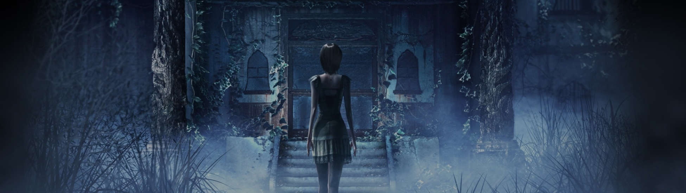

No podemos negar el fracaso de Nintendo Wii U, pero tuvo juegos muy interesantes que la hicieron una opción atractiva a pesar de sus problemas. Afortunadamente para quienes nunca consiguieron una, la gran mayoría de estos títulos dieron el salto a Switch y otras plataformas. Fatal Frame: Maiden of Black Water (Project Zero: Maiden of Black Water en Europa) es uno de ellos.
Si no están familiarizados con esta serie de juegos de terror, les recomendamos dar una mirada a nuestra retrospectiva de la saga. Igual que sus predecesores, esta entrega nos permite vivir una aterradora historia de horror japonés fuertemente inspirada en el cine, las tradiciones sintoístas, budistas y el género 'survival horror'. Gracias a eso, es una verdadera joya en términos de ambientación. Tristemente, su edad y algunas malas decisiones de diseño afectan negativamente casi todos sus otros aspectos.En esta reseña, basada en la versión de Nintendo Switch, vamos a descubrir si Fatal Frame: Maiden of Black Water vale la pena a pesar de sus defectos.
La historia de este título gira en torno a la Montaña Hikami. Este lugar es infame por la cantidad de personas que van allí a acabar con sus propias vidas y está inspirado en Aokigahara, el «bosque de los suicidios» de Japón. Yuri Kozukata, la protagonista, comienza a explorar este lugar en busca de su desaparecida mentora. Pronto descubre que el lugar está habitado por los fantasmas de aquellos que perecieron allí. Su única defensa es la cámara obscura, un artilugio que le permite mantenerlos a raya mediante fotos.
Los bosques, lagos y santuarios de la montaña son las verdaderas estrellas del juego. Sus escabrosos detalles y los efectos de sonido que los acompañan crean una de las mejores ambientaciones que hemos disfrutado en un juego de horror moderno.
La trama de Maiden of Black Water, en la que se revelan poco a poco un fallido ritual y las tradiciones de los habitantes de la montaña, que llevaron a convertirla en un lugar maldito, no es muy diferente a la de anteriores Fatal Frame. Eso no es realmente un problema, pues los detalles son diferentes y eso le da una personalidad especial. El verdadero inconveniente son los protagonistas. Yuri y los otros dos personajes controlables, Ren Hojo y Miu Hinasaki, no tienen personalidades interesantes y sus trasfondos son tan aburridos como predecibles.
Los fanáticos de la saga reconocerán el apellido de Miu, pues es la hija de la protagonista del primer juego de la franquicia. Esto se hubiera prestado para una conexión interesante con el resto de la serie, pero tiene una relevancia casi nula en el resto de la trama. La presencia de madre e hija no parecen ser más que 'fanservice'.
Hablando de 'fanservice', este es probablemente uno de los peores aspectos que encontramos en nuestro análisis de Fatal Frame: Maiden of Black Water. A pesar de su nula personalidad, Yuri es un personaje muy sexi y el juego busca sacarle provecho a su atractivo de las peores maneras posibles. Cualquier movimiento causa que sus pechos se agiten de una forma ridícula que recuerda a Dead or Alive. En esos juegos de peleas, esto no pasaba de ser una curiosidad que no era necesariamente “excitante”, sino graciosa. Pero aquí sabotea directamente los temas del juego.
El acecho de los fantasmas es una clara metáfora de la depresión. Además, el suicidio es uno de los temas clave de la historia. Resulta imperdonable que tras una secuencia sobre un personaje tratando desesperadamente de superar su trauma, siga un movimiento en el que se resalta el vaivén de sus senos. También ocurre que, cuando los personajes se mojan, su ropa se pega a su cuerpo, marcando especialmente la forma de sus glúteos. Sí, luce muy bien y es sexi, pero no encaja para nada con el resto de elementos del juego.
Aunque nunca se dice de forma explicita, hay dos relaciones en el juego que cuesta interpretar de forma diferente a romances lésbicos. Estos dejan que los mismos fanáticos llenen los espacios en blanco, algo que se nota en los 'fanart' y 'fanfics' que inspiró. No por nada la protagonista se llama Yuri.
Los fanáticos de los 'survival horror' se van a encontrar con un ritmo muy diferente al habitual. Fatal Frame siempre ha tenido una acción mucho más lenta y menos enemigos que los juegos de Resident Evil y Silent Hill. Los personajes caminan muy lentamente, pues el objetivo es dejar que la lúgubre ambientación nos consuma poco a poco, construyendo tensión para que los sustos y las batallas resulten más impactantes.
El problema de Fatal Frame: Maiden of Black Water es que los controles se sienten pesados e imprecisos. Esto puede llevar a muchos momentos de frustración cuando nos perdemos o no logramos localizar el enemigo. Recomendamos fervientemente ajustar las opciones de sensibilidad de la cámara para reducir este problema. A la hora de combatir, los sensores de movimiento del Switch convierten a la consola en la misma cámara y eso ayuda a crear inmersión.
Tenemos la opción de mantener un foco automático sobre los enemigos, pero esto termina facilitando demasiado las batallas. De hecho, este es un juego bastante fácil en su dificultad normal. Los objetos curativos no escasean y es posible comprar más al comienzo de cada capítulo. Solo moriremos si olvidamos curarnos. Incluso si esto pasa, contamos con objetos que nos reviven automáticamente. La falta de reto y lo repetitivas que son las rutinas de muchos de los fantasmas hacen que los combates se vuelvan aburridos a mitad del juego. Solo unos pocos cuentan con ataques o movimientos especiales que agregan algo de variedad.
Cuando llegamos al final del juego, lo que nos puede tomar unas 14 o 15 horas, descubrimos que tenemos otros retos por delante. Además de la dificultad 'Nightmare', podemos volver a jugar para desbloquear más trajes y lentes completando la lista de fantasmas y obteniendo diferentes finales para los tres personajes. Pero la verdad es que solo los completistas encontrarán la motivación para repetir de nuevo los capítulos.Fatal Frame 5 Maiden of Black Water Nintendo Switch PS4 Xbox PC Reseña Crítica Análisis Opinión Review
Terminar la aventura también desbloquea una nueva historia protagonizada por Ayane, de Dead or Alive, que sí agrega variedad mediante nuevos sistemas de juego. Ya que la ninja del clan Mugen Tenshin no tiene una cámara obscura, debe recurrir al sigilo y una herramienta que le permite aturdir temporalmente a los fantasmas para avanzar.